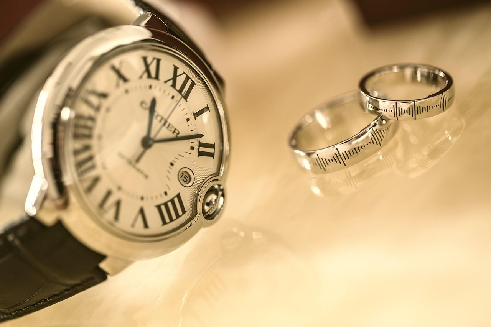

Cartier: Elegance in Every Detail
Published: August 2, 2025
Cartier has long been the jeweler of kings and the king of jewelers. Known for its exquisite design language and rich history, Cartier watches like the Tank, Santos, and Ballon Bleu blend artistic form with mechanical precision.
The brand’s legacy in high society and royal circles gives its watches an aura of sophistication and timeless charm. Whether worn for fashion or heritage, Cartier pieces command attention and respect.
For many, a Cartier is the first foray into luxury horology — one that never goes out of style.